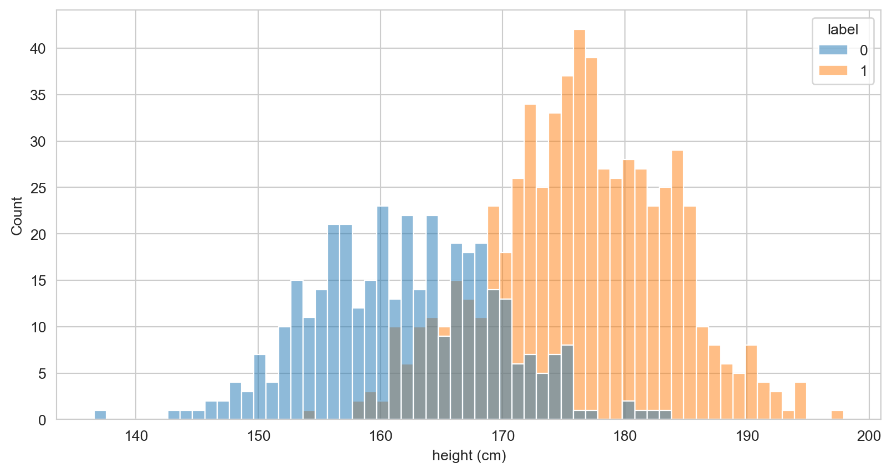
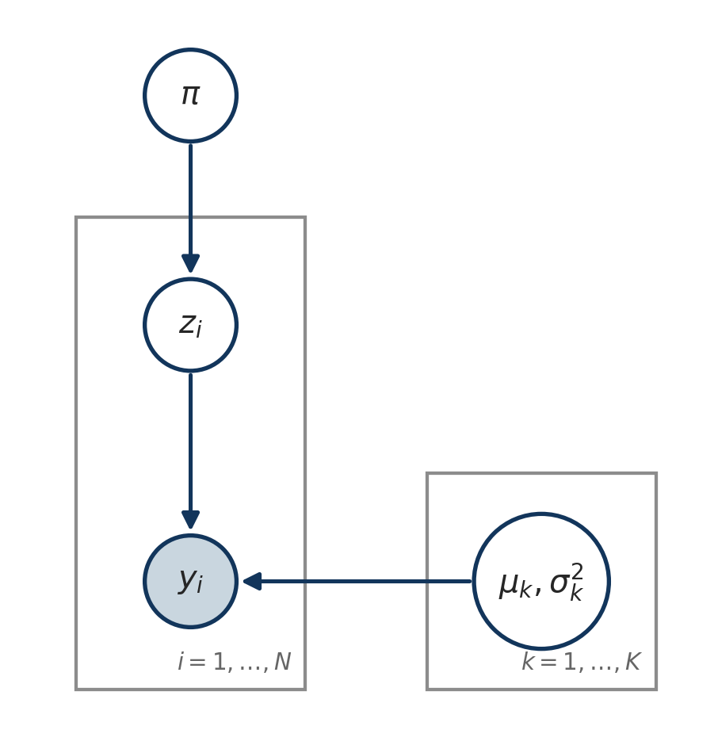
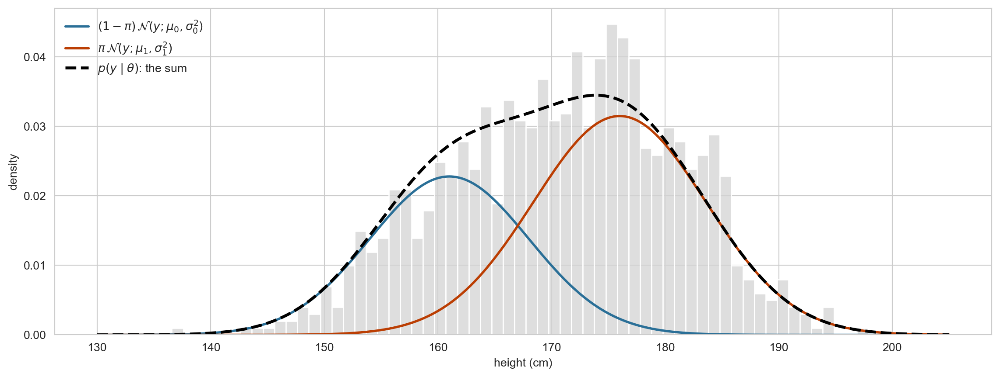
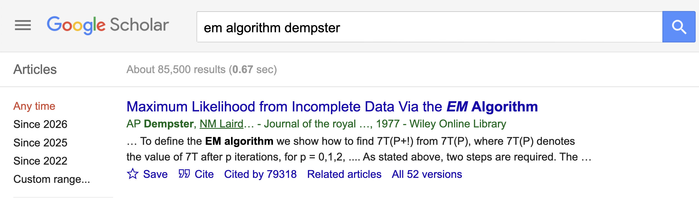
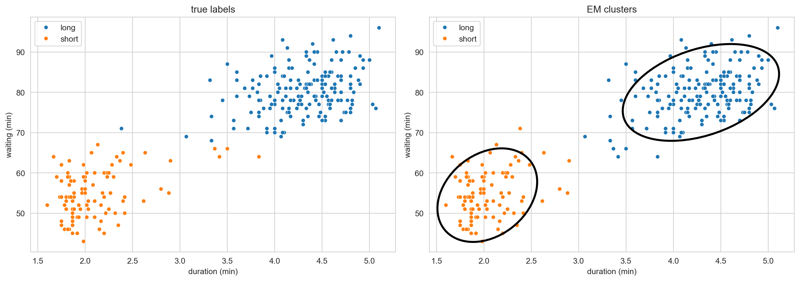
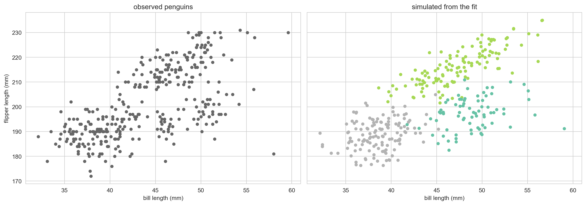
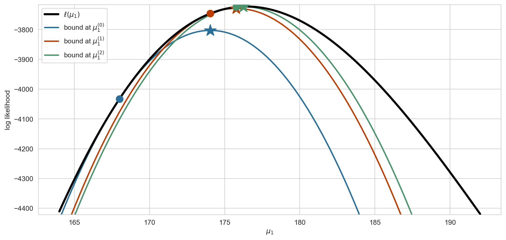

Department of Biostatistics and Computational Biology, University of Rochester Medical Center
Where we left off
Week 2 ended with three things to carry forward:
Bayes’ theorem is likelihood times prior, then normalize. For the coin, the hidden quantity was the parameter \(\theta\) and the posterior was a Beta distribution.
Graph structure records conditional independence, and independence turns one big computation into many small ones.
Conjugacy sometimes gives a closed form. Otherwise we need an algorithm.
Week 1 left a question open:
Given observations, hidden variables \(z\), and parameters \(\theta\): how do we estimate \(\theta\) while accounting for the uncertainty in \(z\)?
This week the hidden variable is a label\(z_i\) for every observation. Its posterior is computed by the same update as the coin, and an algorithm built from that posterior answers the question.
Goals
Write down the Gaussian mixture model as a generative model and draw its graphical model.
Explain why the observed data likelihood is hard to maximize and the complete data likelihood is easy.
Derive and implement the E-step and the M-step for a two component mixture.
Extend the algorithm to \(K\) components in \(D\) dimensions and fit it to real data.
Derive EM as coordinate ascent on a lower bound, and prove that the likelihood never decreases.
Heights of 1000 adults. Gender information was lost, so this is all we get to see.
Heights: the labels we do not see
Code
dat = pd.DataFrame({"y": y_obs, "label": labels})sns.histplot(data=dat, x="y", hue="label", binwidth=1)plt.xlabel("height (cm)")plt.show()

The data were simulated from two groups (male and female). Each height came from one of them, and the group membership is what we would like to recover.
Three species were recorded. Can you see three groups? We will use the recorded species only to check our answer at the end.
The model
A latent variable model. Each observation first picks a group, then draws a value from that group:
\[
\begin{aligned}
z_i &\sim \text{Categorical}(\pi), \\
y_i \mid z_i &\sim \text{Normal}(\mu_{z_i}, \sigma_{z_i}^2), \qquad i = 1, \ldots, N.
\end{aligned}
\]
In Week 1’s letters:
Observed, \(x_O\): the data \(y_{1:N}\).
Hidden, \(x_H\): the labels \(z_{1:N}\), one per observation.
Parameters, \(\theta = (\pi, \mu_0, \sigma_0^2, \mu_1, \sigma_1^2)\) for two groups: shared by every observation.
This week we infer\(z\), in the sense of computing a posterior over it, and we learn\(\theta\) as a point estimate. Week 2 put a distribution on \(\theta\) as well. Combining the two, a conjugate prior on \(\theta\) inside EM, is an assignment problem.
As a graphical model

Same picture as Week 1, with the plate holding a mixture component. Two facts we can read off with Bayes ball, both used repeatedly this week:
Given \(\theta\), the pairs \((z_i, y_i)\) are independent across \(i\): the joint is a product of \(N\) identical factors.
Given \(\theta\) and \(y_i\), the label \(z_i\) is independent of every other observation: its posterior depends on \(y_i\) alone.
The complete data likelihood
Suppose for a moment that we saw the labels. The chain rule along the arrows of the graph, \(\pi \to z_i \to y_i\), gives the joint of one observation and its label:
Each observation contributes one term for \(\pi\) and one term for the parameters of the component it belongs to. Nothing couples \((\mu_0, \sigma_0^2)\) to \((\mu_1, \sigma_1^2)\).
The observed data likelihood
We do not see \(z_i\). The likelihood of what we actually have is the marginal of \(y_i\). Two rules from Week 2, applied once each:
The \(\log\) no longer reaches the individual factors. Every parameter appears inside every term, and there is no closed form maximizer.
How should we estimate \(\theta\) when only this likelihood is available?
The mixture density

The marginal density of a height is a weighted sum of the component densities, with the mixing weights \(\pi_k\) as the weights. Every observation is described by this one curve, drawn here at the true parameters. The label only says which term it came from.
Soft assignments
Background
One of the most commonly used inference methods for latent variable models in statistics and machine learning.
Developed by Dempster, Laird, and Rubin and published in 1977.

If \(z_i\) were known
Let’s focus on the case with two classes: \(z_i \in \{0, 1\}\) and \(y_i \in \mathbb{R}\).
If \(z_i\) were known, how would you estimate \((\mu_0, \sigma_0^2)\), \((\mu_1, \sigma_1^2)\), and \(\pi\)?
Write down the estimators. You have seen them before, in a course on maximum likelihood.
If \(z_i\) were known: the answer
Sort the observations by their label and treat each group as its own Gaussian sample:
Similarly define \(N_1, \hat{\mu}_1, \hat{\sigma}_1^2\), and estimate the mixing weight by the fraction of labels equal to \(1\): \(\hat{\pi} = N_1 / N\).
The indicators do the sorting. Keep an eye on them: the whole algorithm will come from replacing \(1[z_i = 1]\) by something softer.
Complete data maximum likelihood
These are the maximizers of the complete data log likelihood. Writing out the Gaussian density,
Differentiate with respect to \(\mu_0\) and \(\sigma_0^2\) and check that the maximizers are \(\hat{\mu}_0\) and \(\hat{\sigma}_0^2\) from two slides ago.
Guess, then improve
What if we start by guessing the \(z_i\)’s and gradually improve the guess?
For some observations, we are more certain; for others, less.
We represent this uncertainty by a probability \(p_i = P(z_i = 1) \in [0, 1]\).
These are soft assignments, as opposed to hard assignments (\(0\) or \(1\)).
“Gradually improve” means moving \(p_i\) closer to \(1\) if \(z_i = 1\) and closer to \(0\) if \(z_i = 0\).
For some data points we may not be able to do much better than guessing, i.e. \(p_i \approx 0.5\).
The larger the overlap, the more observations are genuinely ambiguous.
Initializing \(\theta\)
How do we initialize \(p_i = P(z_i = 1)\)?
The probability of belonging to group \(1\) depends on the parameters \(\theta\).
So randomly initialize \(\theta = (\mu_0, \sigma_0^2, \mu_1, \sigma_1^2, \pi)\) and let the model tell us how plausible each group is for each \(y_i\).
A simple recipe:
\(\hat{\mu}_0, \hat{\mu}_1\): two data points drawn at random from \(\{y_i\}\).
\(\hat{\sigma}_0^2 = \hat{\sigma}_1^2\): the sample variance of \(\{y_i\}\).
\(\hat{\pi} = 1/2\): no reason to favour either group to begin with.
Initializing \(\theta\): code
def initialize(y, seed): rng = np.random.default_rng(seed) mu = rng.choice(y, size=2, replace=False) # two random data points sd = np.repeat(y.std(), 2) # pooled sample sd pi =0.5return mu, sd, pimu_hat, sd_hat, pi_hat = initialize(y_obs, seed=1)print(f"mu = {np.round(mu_hat, 1)}, sd = {np.round(sd_hat, 1)}, pi = {pi_hat}")
mu = [168.8 172.7], sd = [10.1 10.1], pi = 0.5
The starting components
The two components we start with are usually a poor description of the data.
Given \(\theta\), Bayes’ theorem turns the guess about the parameters into a guess about \(z_i\). Start from the definition of conditional probability and use the two likelihoods we already have:
The numerator is the complete data likelihood at \(z_i = 1\).
The denominator is the observed data likelihood \(p(y_i \mid \theta)\), which serves as the normalization factor.
This is the soft assignment we were after. In the EM literature \(p_i\) is called the responsibility that group \(1\) takes for observation \(y_i\).
The posterior over all the labels
Only \(y_i\) appeared in \(p_i\). That is the graphical model at work: given \(\theta\), the pairs \((z_i, y_i)\) are independent, so both the joint and the marginal factorize over \(i\), and so does their ratio:
The posterior over \(N\) labels is a distribution on \(2^N\) configurations, but it is a product of \(N\) factors, each a distribution over \(z_i \in \{0, 1\}\).
A distribution on \(\{0, 1\}\) is a Bernoulli, determined by one number: \(p(z_i = 1 \mid y_i, \theta) = p_i\) and \(p(z_i = 0 \mid y_i, \theta) = 1 - p_i\).
So the \(N\) numbers \(p_1, \ldots, p_N\)are the posterior. A general distribution on \(2^N\) configurations would need \(2^N - 1\) numbers; the factorization brings that down to \(N\), and to \(N(K - 1)\) for \(K\) components.
Even a random \(\theta\) already ranks the observations: with \(\hat{\sigma}_0 = \hat{\sigma}_1\), \(p_i\) is monotone in \(y_i\). What it does not yet do is separate them: the \(p_i\)’s are still bunched together.
Alternative: initialize \(p_i\) directly
We do not have to start from \(\theta\). We can instead draw
\[
p_i \sim \text{Uniform}(0, 1), \quad i = 1, ..., N,
\]
and begin with the parameter update instead of the responsibility update.
We do not know the \(z_i\), but we have \(p_i = P(z_i = 1)\). So we let every observation contribute to both groups, weighted by how strongly it belongs:
These are the soft counts. They need not be integers: \(N_1 = 582.4\) simply means the data supply the equivalent of \(582.4\) observations to group \(1\).
and the same with \(1 - p_i\) and \(N_0\) for group \(0\).
Note
The denominator is \(N_1\), not \(N_1 - 1\): the M-step maximizes a likelihood, so it returns the maximum likelihood estimator of the variance, not the unbiased one.
M-step: what is actually being maximized
The M-step maximizes the expected complete data log likelihood, where the expectation is over \(z_i\) under the current \(p_i\):
The complete data log likelihood is linear in the indicators \(1[z_i = k]\), so taking its expectation over \(z_i\) simply replaces each indicator by \(p_i\). That is why the E-step’s expectations are exactly what the M-step needs.
The \(\log\) sits inside the sum over components, so \(Q\) splits into separate pieces for \(\theta_0\), \(\theta_1\) and \(\pi\), exactly like the complete data log likelihood did.
Each piece is a weighted Gaussian log likelihood, which we know how to maximize in closed form. Hence the formulas on the previous slide.
That is the whole trick: the observed data log likelihood has a \(\log\) of a sum and is awkward; \(Q\) does not.
stopped after 722 iterations
pi = 0.61, mu = [161.8 176.8], sd = [7.2 6.9]
truth: P(z = 1) = 0.6, mu = [161. 176.], sd = [7. 7.6]
Important
Compare the estimates to the truth up to a relabelling: nothing forces the group EM calls \(1\) to be the group we called \(1\) when simulating. Convergence took 722 iterations. We come back to why in a moment.
Most of the gain arrives in the first few iterations; the tail is slow. This is typical of EM: fast at first, then linear convergence.
Two things to watch for
Label switching: nothing in the model distinguishes group \(0\) from group \(1\). An initialization that draws \(\hat{\mu}_0 > \hat{\mu}_1\) converges to the same fit with the labels swapped, which is why we compared to the truth up to a relabelling.
Local optima: EM only guarantees that the likelihood does not decrease, so a bad start can converge to a poor solution. In practice: run several random restarts and keep the one with the highest likelihood.
Common alternatives to a purely random start:
Run \(k\)-means first and use the cluster means and within-cluster variances.
Split the data at the median (or at a quantile) and estimate \(\theta\) from the two halves.
Separation is what makes it easy
The heights are a hard instance: the two means are barely two standard deviations apart. Compare with two groups whose means are ten standard deviations apart:
stopped after 5 iterations
pi = 0.30, mu = [10.01 0.08], sd = [0.98 1.04]
truth: P(z = 1) = 0.7, mu = [0, 10], sd = [1, 1]
A handful of iterations, and the parameters are recovered to two decimal places (up to relabelling). The algorithm did not change. The problem got easier.
Why overlap hurts
When the groups separate, almost every \(p_i\) is near \(0\) or \(1\): the soft assignments are nearly the true labels, and the M-step is nearly the complete data MLE.
When the groups overlap, many \(p_i\) sit near \(1/2\). Those observations pull both components towards the middle, and each iteration moves \(\theta\) only slightly.
The rate of convergence of EM is governed by the fraction of missing information. Overlap is exactly what makes that fraction large.
Not a defect of the algorithm: with heavily overlapping components, the data really do carry little information about which group each observation came from.
The \(p_i\) have been pushed towards \(0\) and \(1\), except in the overlap region, where the data genuinely cannot tell us which group an observation came from.
Properties worth remembering
Monotone. The observed data log likelihood never decreases. This makes EM easy to debug.
Not global. It converges to a stationary point, which may be a local maximum. Use several random restarts.
No step size. Unlike gradient ascent, there is nothing to tune, and the constraints (\(\pi \in [0,1]\), \(\sigma^2 > 0\)) are satisfied automatically at every iteration.
Degenerate solutions. A component can collapse onto a single point, sending \(\sigma_k^2 \to 0\) and the likelihood to \(\infty\). In practice, add a small floor to the variance.
Where did we use the assumption that the components are Gaussian? Which step would change for a mixture of Poissons, and which would not?
Where we left off
Monday in one slide
Model.\(z_i \sim \text{Categorical}(\pi)\), \(y_i \mid z_i \sim \mathcal{N}(\mu_{z_i}, \sigma_{z_i}^2)\). The labels \(z_i\) are hidden.
E-step. Given \(\theta\), the responsibility \(p_i = P(z_i = 1 \mid y_i, \theta) = \mathbb{E}[1[z_i = 1] \mid y_i, \theta]\) is a Bayes’ theorem calculation.
M-step. Given the \(p_i\), replace indicators by responsibilities in the complete data estimators.
Behaviour.\(\ell\) never decreases; convergence is slow when components overlap; restarts guard against local optima.
Today: the same algorithm for \(K\) components in \(D\) dimensions, fitted to the geyser and the penguins. Then the theory: where the E-step comes from, and why \(\ell\) never decreases.
EM beyond one dimension
The general model
The two datasets we opened with are two dimensional, and the penguins have three groups. Nothing about EM changes, only the bookkeeping:
In \(D\) dimensions the densities are tiny and the ratio underflows. Work on the log scale: compute \(\log \pi_k + \log \mathcal{N}_D(y_i; \mu_k, \Sigma_k)\), subtract the row’s logsumexp, then exponentiate. The logsumexp is also the observed data log likelihood \(\log p(y_i \mid \theta)\), so we get the convergence monitor for free.
M-step for \(K\) components
Identical in shape to the one dimensional case: soft counts, weighted mean, weighted covariance:
The only new object is the outer product in \(\Sigma_k\).
Implementation
The general algorithm is about thirty lines of numpy. You will write them in the lab; today we only look at what they produce. The pieces are:
Initialize: \(K\) random data points as means, the pooled covariance for every \(\Sigma_k\), \(\pi_k = 1/K\).
E-step: the \(N \times K\) matrix of \(\log \pi_k + \log \mathcal{N}_D(y_i; \mu_k, \Sigma_k)\), normalized row by row with logsumexp.
M-step: soft counts, weighted means, weighted covariances, plus a small multiple of the identity added to each \(\Sigma_k\).
Loop until the log likelihood stops moving, and restart from several seeds, keeping the fit with the highest log likelihood.
Note
The recorded labels are used only to check the answer, and only after fitting. EM never sees them.
Old Faithful
Code
X_geyser = faithful[["duration", "waiting"]].to_numpy()fit_geyser = best_of(X_geyser, K=2)print(f"converged in {fit_geyser['iters']} iterations, log lik = {fit_geyser['ll']:.1f}")print(f"pi = {np.round(fit_geyser['pi'], 2)}")print(f"mu = {np.round(fit_geyser['mu'], 1).tolist()}")for k inrange(2):print(f"Sigma[{k}] =\n{np.round(fit_geyser['Sigma'][k], 1)}")
converged in 13 iterations, log lik = -1130.3
pi = [0.36 0.64]
mu = [[2.0, 54.5], [4.3, 80.0]]
Sigma[0] =
[[ 0.1 0.4]
[ 0.4 33.7]]
Sigma[1] =
[[ 0.2 0.9]
[ 0.9 36. ]]
Two components: short eruptions with short waits, and long eruptions with long waits.
Old Faithful: how well did it do?
Code
acc = compare(X_geyser, fit_geyser, faithful["kind"].to_numpy(),"duration (min)", "waiting (min)")print(f"agreement with the recorded kind: {acc:.1%}")

agreement with the recorded kind: 98.2%
Penguins
Code
X_peng = penguins[["bill_length_mm", "flipper_length_mm"]].to_numpy()fit_peng = best_of(X_peng, K=3)print(f"converged in {fit_peng['iters']} iterations, log lik = {fit_peng['ll']:.1f}")print(f"pi = {np.round(fit_peng['pi'], 2)}")print(f"mu = {np.round(fit_peng['mu'], 1).tolist()}")for k inrange(3):print(f"Sigma[{k}] =\n{np.round(fit_peng['Sigma'][k], 1)}")
codes_peng = pd.Categorical(penguins["species"]).codespred_peng = align(codes_peng, fit_peng["r"].argmax(axis=1), 3)categories = pd.Categorical(penguins["species"]).categoriesfrom IPython.display import Markdowndef md_table(df, index=True):"""Markdown table without the tabulate dependency.""" d = df.reset_index() if index else df rows = [list(map(str, d.columns))] + [list(map(str, r)) for r in d.itertuples(index=False)] lines = ["| "+" | ".join(r) +" |"for r in rows] lines.insert(1, "|"+"---|"*len(rows[0]))return Markdown("\n".join(lines))confusion = pd.crosstab(penguins["species"].to_numpy(), categories[pred_peng], rownames=["true species"], colnames=["EM cluster"])md_table(confusion)
true species
Adelie
Chinstrap
Gentoo
Adelie
137
4
5
Chinstrap
5
60
3
Gentoo
0
1
118
The errors sit on the Adelie/Chinstrap boundary, where the two species overlap in these two measurements. Given only bill length and flipper length, no method could separate them cleanly.
Restarts are not optional
Code
restarts = pd.DataFrame([ {"seed": s,"log lik": round(f["ll"], 1),"iterations": f["iters"],"agreement": f"{(align(codes_peng, f['r'].argmax(axis=1), 3) == codes_peng).mean():.1%}"}for s, f in ((s, em_gmm(X_peng, 3, seed=s)) for s inrange(10))])md_table(restarts, index=False)
seed
log lik
iterations
agreement
0
-2187.6
50
94.6%
1
-2187.6
55
94.6%
2
-2187.6
74
94.6%
3
-2187.6
80
94.6%
4
-2187.6
106
94.6%
5
-2187.6
105
94.6%
6
-2187.6
39
94.6%
7
-2209.8
277
76.9%
8
-2187.6
73
94.6%
9
-2187.6
51
94.6%
Most seeds find the same solution, but at least one lands in a worse local optimum with a visibly lower log likelihood, and a much worse clustering. Selecting on the log likelihood, as the restart loop does, picks the good fit without ever looking at the labels.
Generating from the fitted mixture
Week 1 listed three things a model can do: inference, prediction, generation. A fitted mixture is a generative model. Run it forwards: draw a label, then draw a point from that component.
Code
rng_gen = np.random.default_rng(1)z_new = rng_gen.choice(3, size=X_peng.shape[0], p=fit_peng["pi"])Y_new = np.stack([rng_gen.multivariate_normal(fit_peng["mu"][k], fit_peng["Sigma"][k]) for k in z_new])fig, axes = plt.subplots(1, 2, figsize=(14, 5), sharex=True, sharey=True)axes[0].scatter(X_peng[:, 0], X_peng[:, 1], s=20, color="0.4"); axes[0].set_title("observed penguins")axes[1].scatter(Y_new[:, 0], Y_new[:, 1], s=20, c=z_new, cmap="Set2"); axes[1].set_title("simulated from the fit")for ax in axes: ax.set_xlabel("bill length (mm)")axes[0].set_ylabel("flipper length (mm)")plt.tight_layout(); plt.show()

If the simulated data look like the real data, the model has captured what matters. This is the simplest form of a posterior predictive check; we will use the idea again.
What we glossed over
Choosing \(K\). We were told \(2\) and \(3\). In general, use BIC, cross validation, or a nonparametric prior over the number of components (we will discuss this in week 9 or 10).
Regularizing \(\Sigma_k\). The small multiple of the identity added to each \(\Sigma_k\) is not cosmetic: without it a component can collapse onto a few points, \(\Sigma_k\) becomes singular, and the likelihood diverges. We take this up in Thursday’s lab.
Priors on \(\theta\). Put a prior on \(\theta\) and replace the maximum in the M-step by the posterior mode. With a conjugate prior on \(\Sigma_k\) the update adds a fixed matrix to the weighted scatter, which is exactly what the regularizer does. Week 2’s conjugacy and this week’s EM combine in one line.
Constrained covariances. Fix \(\Sigma_k = \sigma^2 I\) with the same \(\sigma^2\) for every \(k\), and let \(\sigma^2 \to 0\) instead of estimating it. The responsibilities become a softmax over squared distances with \(\sigma^2\) as the temperature, so at zero temperature they are hard assignments to the nearest mean, and EM becomes \(k\)-means.
Why does EM work?
Two claims we have not justified
So far EM has been presented as a recipe that happens to behave well. We owe two explanations:
Why is the E-step exactly “compute \(p_i = P(z_i = 1 \mid y_i, \theta)\)”? We asserted it. Where does it come from?
Why does the observed data log likelihood never decrease?
Both fall out of a single identity, which will also be the foundation for variational inference later in the course.
The quantity we actually want
We want the observed data log likelihood, with the latent variables summed out:
The difference is a \(\log\) of a sum. It does not split into a term for \(\theta_0\) and a term for \(\theta_1\), there is no closed form, and the parameters stay coupled.
Introduce a distribution over the latent variables
Let \(q_i(z_i)\) be any distribution over \(z_i\). Multiply and divide:
The E-step is not a choice. It is the solution of an optimization problem, and the answer is given by the posterior.
Why that boils down to computing \(p_i\)
The E-step optimizes over distributions, which sounds hard. Two facts collapse it to \(N\) numbers.
The posterior factorizes. A distribution over \(z_{1:N}\) lives on \(2^N\) points, but the graphical model told us that given \(\theta\) the observations are independent, so \(p(z_{1:N} \mid y_{1:N}, \theta) = \prod_i p(z_i \mid y_i, \theta)\). The problem separates into \(N\) independent ones.
Each factor is a distribution on two points. A distribution over \(z_i \in \{0, 1\}\) is determined by a single number.
So the entire E-step is \[
p_i := q_i^{(t+1)}(z_i = 1) = P(z_i = 1 \mid y_i, \theta^{(t)}) = \frac{\pi \, \mathcal{N}(y_i; \mu_1, \sigma_1^2)}{(1-\pi) \mathcal{N}(y_i; \mu_0, \sigma_0^2) + \pi \, \mathcal{N}(y_i; \mu_1, \sigma_1^2)},
\] which is the Bayes’ theorem calculation from Monday. With \(K\) components it is \(K-1\) numbers per observation: the responsibilities \(r_{ik}\).
The M-step, derived
Now fix \(q = q^{(t+1)}\) and maximize the bound over \(\theta\). Split the bound:
Averaging inside the log is what makes \(\ell\) hard: a log of a sum, which does not separate. That is what marginalizing \(z\) does, and it is not what the E-step does.
Averaging the log is easy: the log hits a single joint density, which factorizes into one term per parameter.
Jensen says \(\mathbb{E}[\log X] \leq \log \mathbb{E}[X]\): swapping the two costs us something, and the KL is exactly what it costs.
The right hand side is also where the name comes from. The Expectation step averages the complete data log likelihood over every value \(z\) could take, weighted by the posterior. The bound view explains why the posterior is the right weight, and hands us monotonicity for free.
Deriving the updates
With \(q_i(1) = p_i\), the \(Q\) function for the two component GMM is
Three steps, each justified by something we have already established:
\[
\begin{aligned}
\ell(\theta^{(t+1)}) \;&\geq\; \mathcal{L}(q^{(t+1)}, \theta^{(t+1)}) &&\text{(the bound holds for any } q, \theta) \\
&\geq\; \mathcal{L}(q^{(t+1)}, \theta^{(t)}) &&\text{(the M-step maximized over } \theta) \\
&=\; \ell(\theta^{(t)}) &&\text{(the E-step made the bound tight).}
\end{aligned}
\]
The last line is where the E-step earns its keep. If \(q^{(t+1)}\) were anything other than the exact posterior, that equality would be a strict inequality in the wrong direction, and the argument would collapse.
The picture
Code
def elbo_mu1(y, p, mu0, mu1, sd, pi):"""The bound as a function of mu_1, with q held at the current responsibilities.""" H =-np.sum(p * np.log(p +1e-300) + (1- p) * np.log(1- p +1e-300)) const = np.sum((1- p) * (np.log(1- pi) + norm.logpdf(y, mu0, sd[0])))return const + np.sum(p * (np.log(pi) + norm.logpdf(y, mu1, sd[1]))) + H# hold every parameter but mu_1 fixed, so the picture fits in one dimensionmu0_f, sd_f, pi_f =161.0, np.array([7.0, 7.6]), 0.6g1 = np.linspace(164, 192, 400)ell_curve = np.array([loglik(y_obs, [mu0_f, m], sd_f, pi_f) for m in g1])plt.figure(figsize=(12, 5.5))plt.plot(g1, ell_curve, "k", lw=3, label=r"$\ell(\mu_1)$", zorder=3)mu1_t =168.0for it, colour inenumerate(["#2a6f97", "#bb3e03", "#4c956c"]): p_t = responsibility(y_obs, [mu0_f, mu1_t], sd_f, pi_f) # E-step bound = np.array([elbo_mu1(y_obs, p_t, mu0_f, m, sd_f, pi_f) for m in g1]) mu1_next = np.sum(p_t * y_obs) / np.sum(p_t) # M-step plt.plot(g1, bound, color=colour, lw=2, label=fr"bound at $\mu_1^{{({it})}}$") plt.plot(mu1_t, loglik(y_obs, [mu0_f, mu1_t], sd_f, pi_f), "o", color=colour, ms=10, zorder=4) plt.plot(mu1_next, elbo_mu1(y_obs, p_t, mu0_f, mu1_next, sd_f, pi_f), "*", color=colour, ms=18, zorder=4) mu1_t = mu1_nextplt.ylim(ell_curve.min() -3, ell_curve.max() +6)plt.xlabel("$\\mu_1$"); plt.ylabel("log likelihood")plt.legend(loc="upper left")plt.show()

Dot: the bound touches \(\ell\) at the current \(\mu_1\). Star: the bound’s maximum, which is the next iterate. The contact is a tangency, not a crossing (see the appendix), so EM stops exactly at stationary points of \(\ell\).
EM is coordinate ascent
The whole algorithm is coordinate ascent on the single objective \(\mathcal{L}(q, \theta)\):
This explains the properties we observed. Coordinate ascent climbs, so the likelihood is monotone; and it stops at a stationary point, which need not be global. Hence the restarts.
It also explains why there is no step size: each step is an exact maximization, not a small move in a good direction.
How fast?
EM is a map \(\theta^{(t+1)} = M(\theta^{(t)})\). Near a maximum \(\theta^\star\),
If the data nearly determine the latent variables (\(p_i \approx 0\) or \(1\)), then \(J \approx 0\) and EM converges in a handful of steps.
If the data say little about \(z\) (\(p_i \approx 1/2\)), then \(J \approx I\) and convergence crawls.
This is the precise form of “overlap hurts” from Monday, and it matches what we measured: 5 iterations when the components separated, 722 when they overlapped.
Generalized EM
Look again at the monotonicity argument. The M-step entered only through
GEM: any \(\theta^{(t+1)}\) that increases \(Q\) keeps the likelihood monotone. One gradient or Newton step on \(Q\) suffices.
This rescues EM when the M-step has no closed form.
The E-step can also be approximated: estimate the expectation in \(Q\) by sampling \(z\) from the posterior and you get Monte Carlo EM. But this one gives up the guarantee. The sampled \(Q\) is a noisy version of the bound, so the likelihood can drop from one iteration to the next, and convergence requires growing the number of samples or averaging over iterations. It points ahead to the sampling methods later in the course.
When the E-step is not available
Everything above rested on one step: setting \(\text{KL}(q_i \| p(z_i \mid y_i, \theta)) = 0\). That needs the posterior in closed form.
For a GMM the posterior is a distribution over \(K\) points, so it is trivial. For a hidden Markov model it takes a forward-backward pass, but is still exact. That is where we go next week.
For most interesting models it is intractable. Then we cannot close the gap, and we have two options:
Sample from \(p(z \mid y, \theta)\) instead of computing it: Markov chain Monte Carlo and sequential Monte Carlo, later in the course.
Restrict\(q\) to a tractable family and accept a nonzero KL gap. The bound \(\mathcal{L}(q, \theta)\) stays a valid lower bound, and we maximize it anyway. That is variational inference, which we take up later in the course.
EM is the special case of variational inference in which the restricted family happens to contain the exact posterior.
EM is not about mixtures
Nothing in the derivation used the mixture structure. The recipe needs only
a latent or missing variable \(z\) that makes \(\log p(y, z \mid \theta)\) easy, and
a posterior \(p(z \mid y, \theta)\) we can compute.
Survival times \(y_i \sim \text{Exponential}(\lambda)\). For subjects in \(\mathcal{O}\) we observe \(y_i\); for subjects in \(\mathcal{C}\) the study ended first, so we know only that \(y_i > c_i\).
Latent variable: the unobserved true survival time of a censored subject.
Complete data log likelihood: \(\sum_{i=1}^{N} (\log \lambda - \lambda y_i)\), trivial to maximize.
Solve for the fixed point \(\lambda^\star = M(\lambda^\star)\). Do you recognize the estimator?
Summary
\(\ell(\theta) = \mathcal{L}(q, \theta) + \text{KL}(q \, \| \, p(z \mid y, \theta))\): one identity, everything follows.
E-step: maximize the bound over \(q\). The answer is the posterior, and because the posterior factorizes into distributions on \(K\) points, “computing \(q\)” is just computing the \(N \times K\) responsibilities.
M-step: maximize the bound over \(\theta\). The entropy drops out, leaving the weighted MLE.
Monotonicity is a two line consequence, not a separate theorem.
Suppose we ran the E-step only approximately, stopping before \(\text{KL} = 0\). Which step of the monotonicity argument breaks, and would the likelihood still increase?
Looking ahead
What to carry into Week 4
A latent variable model is a generative story with some variables hidden. The posterior over the hidden variables is a Bayes’ theorem calculation, exactly as in Week 2.
EM answers Week 1’s question: estimate \(\theta\) by averaging the complete data log likelihood over the posterior of \(z\), then maximizing.
The E-step is the posterior; the M-step is a weighted complete data MLE; the likelihood never decreases.
Graph structure made the E-step cheap: given \(\theta\), the labels are independent, so the posterior is \(N\) separate distributions over \(\{0, 1\}\) (or over \(K\) labels).
Next week we drop the independence. The labels form a Markov chain, \(z_{i+1}\) depends on \(z_i\), and the posterior over \(z_{1:N}\) no longer factorizes. The E-step becomes the forward-backward algorithm, and EM becomes Baum-Welch. Everything else on these slides stays the same.
Reading for Week 4: hidden Markov models
Gentler and more thorough. Bishop, Pattern Recognition and Machine Learning (2006), §13.1 Markov models and §13.2 Hidden Markov models, including the forward-backward algorithm (§13.2.2) and Viterbi (§13.2.5).
One volume. MLaPP Ch. 17, Markov and hidden Markov models.
The classic tutorial. Rabiner, L. R. (1989). A tutorial on hidden Markov models and selected applications in speech recognition. Proceedings of the IEEE, 77(2), 257–286.
As you read, watch for the quantity \(\gamma_t(k) = P(z_t = k \mid y_{1:T}, \theta)\). It is this week’s responsibility \(r_{ik}\) with the whole sequence in the conditioning, and it is what the forward-backward algorithm computes.
Appendix
The bound is tangent, not merely touching
Fisher’s identity. At \(\theta = \theta^{(t)}\) the bound matches \(\ell\) in gradient as well as in value:
So the contact in the picture is a tangency, not a crossing.
\(\theta^\star\) is a fixed point of EM \(\iff\)\(\nabla \ell(\theta^\star) = 0\). EM halts exactly at stationary points of the likelihood we actually care about. It is not quietly optimizing a surrogate that disagrees with \(\ell\).
This makes EM an instance of a minorize-maximize (MM) algorithm: build a minorant touching tangentially, maximize it, repeat.
Proof of Fisher’s identity
Differentiate \(\ell(\theta) = \log \sum_z p(y, z \mid \theta)\):
\[
\nabla_\theta \ell(\theta)
= \frac{\sum_z \nabla_\theta \, p(y, z \mid \theta)}{p(y \mid \theta)}
= \sum_z \frac{p(y, z \mid \theta)}{p(y \mid \theta)} \, \nabla_\theta \log p(y, z \mid \theta)
= \mathbb{E}_{z \mid y, \theta}\!\left[ \nabla_\theta \log p(y, z \mid \theta) \right].
\]
The middle step is \(\nabla p = p \, \nabla \log p\), and the ratio that appears is the posterior. Evaluating at \(\theta = \theta^{(t)}\), the right hand side is the gradient of \(Q(\theta \mid \theta^{(t)})\) at \(\theta^{(t)}\), because \(Q\) averages \(\log p(y, z \mid \theta)\) under that same posterior and the averaging weights do not depend on \(\theta\).